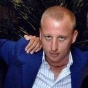
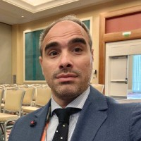
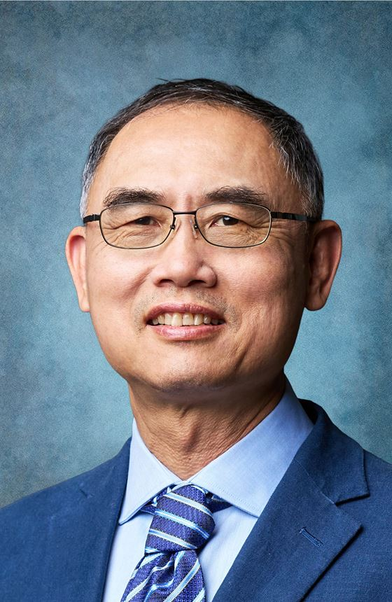
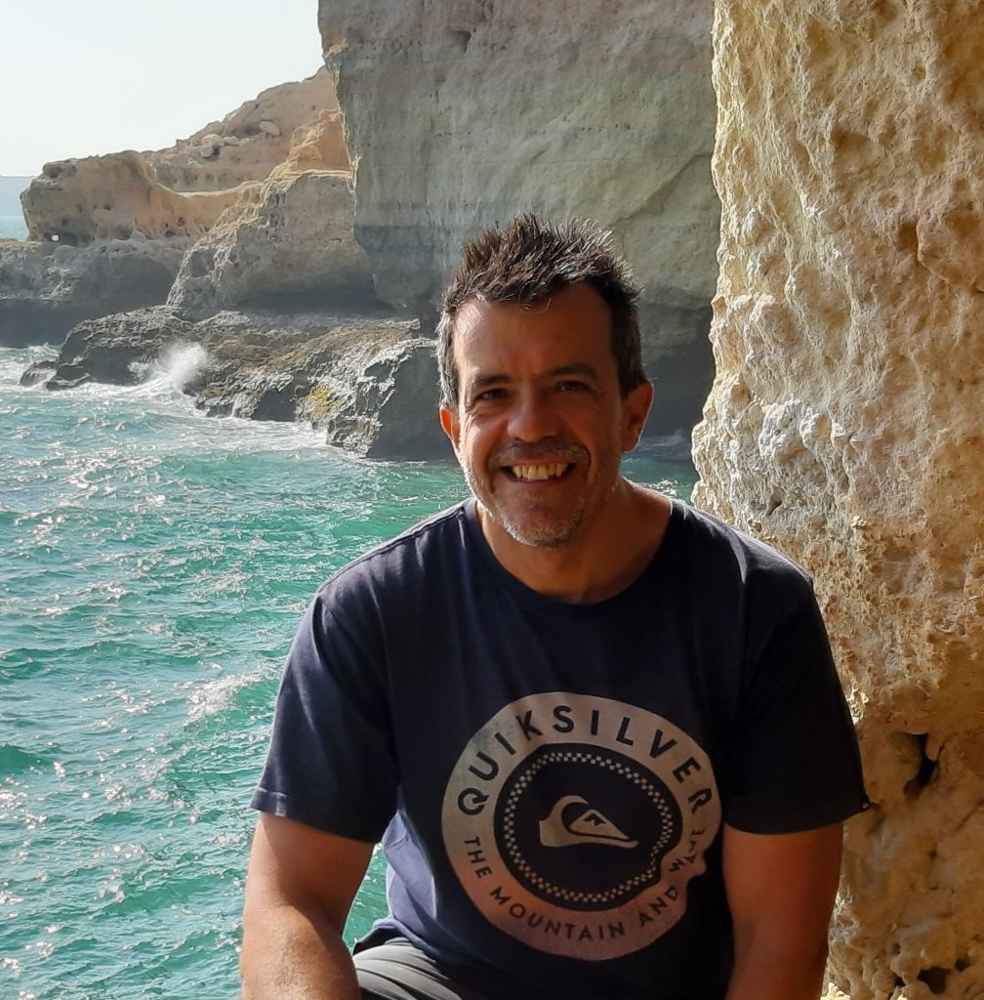
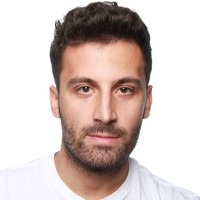
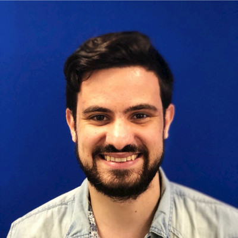
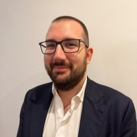
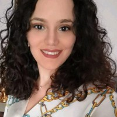

Meet the team behind the AGENSYS workshop
The organizing team

Coordinator of the Master's Degree Program in Data Science and leader of the PICUS research group. His research focuses on Big Multimedia Data Analytics, AI and Social Network Analysis. Director of CINI ITEM Research Lab, with awards from Oracle and Microsoft. Author of about 260 publications.
vincenzo.moscato@unina.it
Head of the M.O.D.A.L. research lab. Expert in Agentic AI with research on autonomous systems within PNRR FAIR and the TUAI Marie Curie network, focusing on goal-driven, adaptive agents in Industry 5.0 and Smart Cities. Workshop Chair for AAAI, ICDCS, MobiCom, and CCGrid.
francesco.piccialli@unina.it
World-renowned pioneer in AI planning and transfer learning. Research on Agentic Reinforcement Learning and LLM-driven autonomous agents. President of IJCAI (2017-2019), General Chair for ACM SIGKDD 2012. Fellow of AAAI, ACM, IEEE, and the Royal Society of Canada.
profqiang.yang@polyu.edu.hk
Head of the Applied Intelligence & Data Analysis (AIDA) research group. His research focuses on Multi-Agent Systems, Swarm Intelligence, Machine Learning, and Computational Intelligence. Editor-in-Chief of Expert Systems (Wiley) and the International Journal of Interactive Multimedia and Artificial Intelligence (IJIMAI). His current research explores agentic aerial intelligence, studying how autonomous UAVs integrate reasoning and memory to cooperate in applications such as disaster response and infrastructure inspection.
david.camacho@upm.es
PhD from University of Naples Federico II. Research focuses on agentic and generative AI systems for socially relevant domains, including social media, public information, and security. Studies opportunities and risks of deploying autonomous AI in consequential domains.
valerio.lagatta@northwestern.edu
Master's Degree in Computer Engineering with honors. Expertise in the intersection of Artificial Intelligence and Social Network Analysis. Research interests in Social Network Analysis, Agent-Based Modeling and Big Data Analytics.
gianmarco.orlando@unina.it
Master's Degree in Computer Engineering from University of Naples Federico II. Expertise in Recommender Systems challenges. Research interests in Recommender Systems, Social Network Analysis and Big Data Analytics.
diego.russo@unibg.it
Researcher within the M.O.D.A.L. group, specializing in agentic workflows for Scientific Discovery and Smart Urban Mobility. Leverages LLMs to orchestrate autonomous pipelines for drug discovery and intelligent traffic optimization. Workshop Chair for FIDTA at ACM MOBIHOC 2025.
daniela.annunziata@unina.itOur multidisciplinary review board